Takistid
Takistid on elemendid, mis takistavad elektrivoolu. Neid saab implementeerida vooluringi, et
kasutada ära pinget, mida ei ole kasutuseks vaja. Samuti saab takisteid kasutada ka näiteks tulede
reguleerimiseks, kasutades veidi modifitseeritud reguleeritavaid takisteid, mida kutsutakse
reostaadiks.
Takistitel on enda takistustugevus ning üldiselt on need ära markeeritud erinevate värvide või värvide
kombinatsioonidega. Aru saamaks takisti tugevust, tuleb takistit vaadates orienteerida takisti nii, et
hõbedane või kuldne värv on paremal ning siis lugeda vasakult paremale värvid üle.
Kasutades jadaühendust on piisav ühest takistist, kuid rööpühenduse puhul on vaja igasse elementi
viia eraldi takisti, kui selleks on tarvidus.
Lülitid
Nüüd, kui baasarusaam on olemas kuidas disainida ja ehitada vooluringi, saame õppida ka selle kontrollimist.
Lüliti on oma olemuselt element, mis lubab, suunab mujale või katkestab elektrivoolu.
Lüliti loob või katkestab füüsilise ühenduse kahe konduktori vahel.
Kõikidele tuttavatest lülititest on näiteks tulede lüliti, hädaohunupp, mis lülitab elektri välja jne.
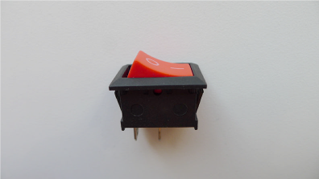
Harilik on/off lüliti. O tähendab inglise keeles out ehk väljas ja I tähendab in ehk sees.
On ka lüliteid, milles on mõlemad elemendid kokku ühendatud.
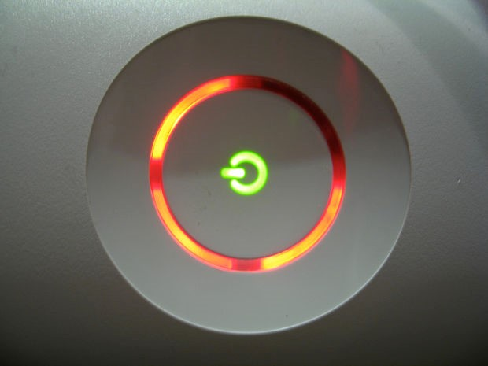
Siin on markeeritud just selline lüliti koos red ring of death’iga, mis oli iga Xboxi kasutaja õudusunenägu.
Vooluringi skeemil kajastatakse lüliteid vooluringist eemale ulatuva osana. Pildilt siis switch
Lisaks üldistele lülititele on olemas ka loomingulisemad lülitid.
Näiteks sildlüliti, mille tööpõhimõte on selles, et jäetakse väike tühimik vooluringi, mille saab ära sillata mingisuguse elektrit juhtiva materjaliga.
Näiteks tekitada sildlüliti särgil rinnapeale ning mingisuguse kaelakeega see ühendada ning kaelakee ära liigutades ühenduse katkestades.
Selliste lülititega saab minna väga loominguliseks. Samuti on ka olemas näpistuslülitid, mis töötavad täpselt nii nagu need kõlavad.
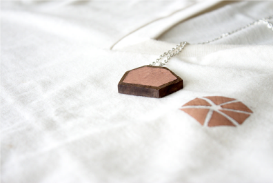
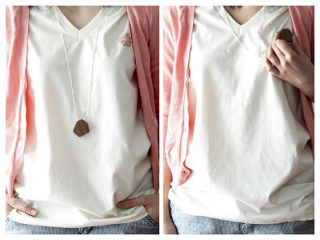
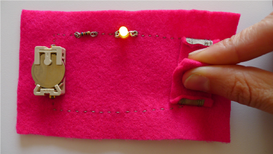
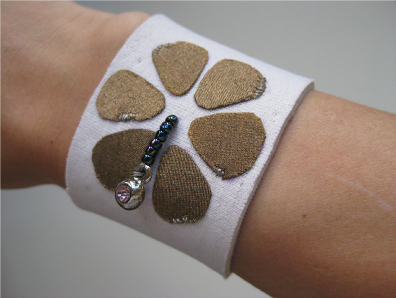
Kasutatud allikad: Make Wearable Electronics, Kate Hartman.
Täiturid
Täiturid on elemendid, mis tavaliselt teevad boom, välguvad või bzzzzzt. Üldiselt on need asjad, mis panevad asjad juhtuma.
Ledid
Ledid on üldiselt väga lihtsa ülesehitusega, nad samuti varieeruvad värvi, heleduse ning valgusenurga poolest. Ledide kontrollimiseks on väga palju võimalusi. Üks lihtsamaid viise LilyPad ledide kasutamiseks on Arduino.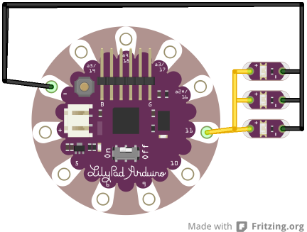
Erinevate tulemuste saavutamiseks saab kasutada erinevaid väljundeid.
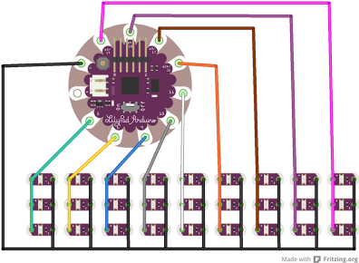
Igasse väljundisse saab panna kuni kolm LilyPad ledi seega kokku saab panna kuni 27 ledi. Arduino Simple’ga on see väga kergesti kontrollitav tema üheksa digitaalse väljundiga. Tähtis on vaid kindlaks teha, et vooluallikas suudab piisavat pinget väljutada. Maksimum on kuni 400mA.
Lõpetuseks, kui on vajadus kontrollida palju LEDe korraga, siis seda saab kasutades multiplexing, Charlieplexing või kasutades selliseid komponente nagu shift register ja PWM laienduskiipe.
Samuti on olemas ka RGB LEDe, millel on kolm värvi – punane, roheline ja sinine.
Sealt ka nimetus (ingl. K RGB = red, green, blue).
Igal värvil on oma jalg, millele voolu andes lülitub LED pirnil see led sisse, samas on ka üldiselt neljas või ka viies jalg, kuhu tuleb ühendada vool või maandus.
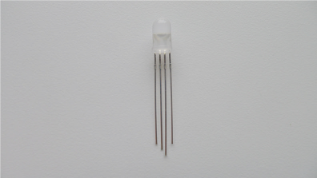
Fiiberoptika
Fiibeoptika või optilised fiibrid on paindlikud ja läbipaistvad fiibrid, mis suudavad valgust transportida. Neid kasutatakse paljudel juhtudel, suurtekiiruste kommunikatsiooniliidestest kuni valgustatud võlukeppideni välja. Fiiberoptikad on tavaliselt kas lõpukuma või küljekumaga ehk valgustades fiibri ühte otsa saab näha kas valgust fiibri lõpus või kogu fiibri peal. LEDe kasutatakse tihti fiiberoptika valgustamiseks.
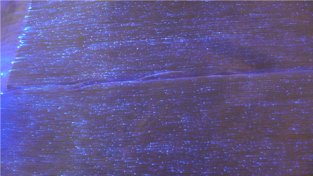
Elektroluminitseeruvad materjalid emiteerivad valgust, kui neile avaldada elektrivoolu. Need materjalid üldiselt koosnevad elektrijuhist(näiteks vask), mis on kaetud fosforiga ning kogu kompott on pandud juhtme, teibi või paneeli vormi. Materjal sobib väga mingisuguste kompleksete mustrite tegemiseks.
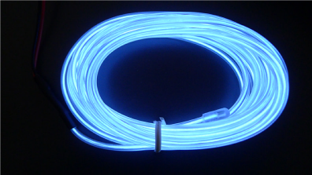
Elektrimuundajaid kasutatakse standartse 220V või 120V voolu muutmiseks materjali enda pingesageduse jaoks. Näiteks auto 12V pinge saab muundada 220V-seks vooluks.
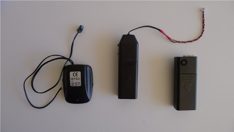
Liikumine
Liikumise jaoks saab kasutada terve rodukond erinevaid elemente. Alustades vibreerimismootorist kuni kuni hammasrattapeani välja. On olemas ka erinevad servoelemente, tiivikuid jne.Kasutatud allikad: Make Wearable Electronics, Kate Hartman.